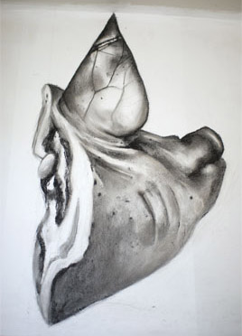

Multidisciplinair project rond de sloop van een jaren 20 wijk in Den Bosch (de Muntel)
De geschiedenis van de wijk werd verzameld in een voormalige slagerij die opnieuw beletterd werd met 'Slagerij Het Pelske'. Er groeide een installatie met houtskooltekeningen, een collage met foto's, schilderingen, films.
Voor meer info kijk in het hoofdstuk 'De Winkel' in het digitale boek 'In Tussentijd'
http://moniquebroekman.blogspot.com/2013/09/3-groentewinkel-slagerij-kunst-als.html
De verzamelde verhalen zijn hier te lezen http://puckworks.created.today/slagerij/slagerijhetpelske.html
